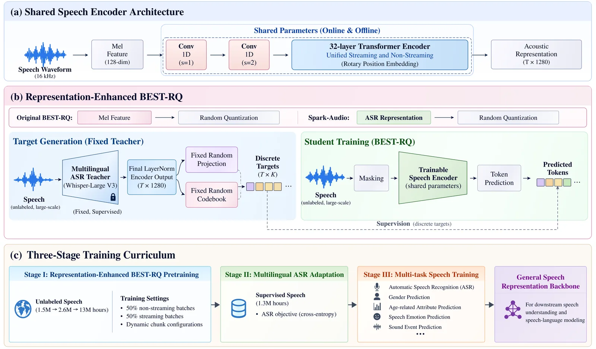
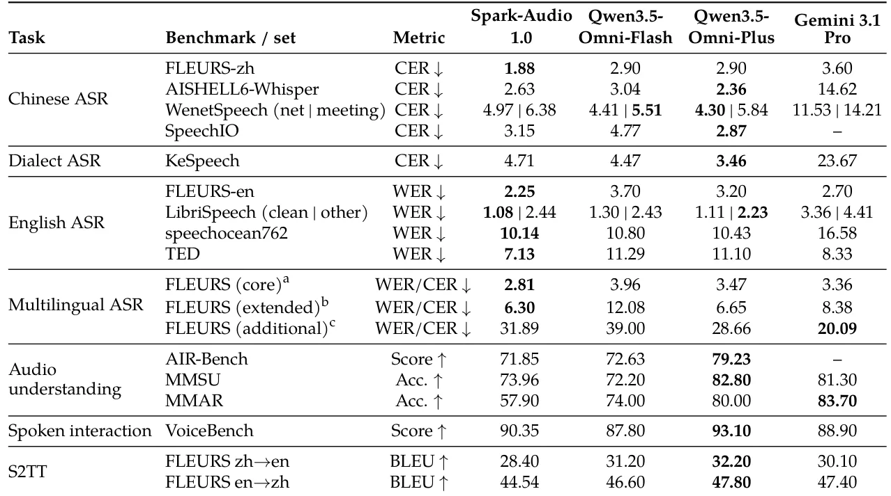
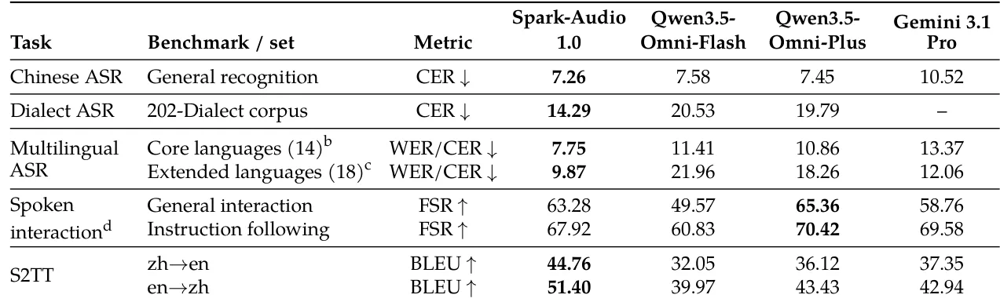

O Desafio da Independência em Modelos de Áudio
O campo de modelos de fundação de fala (speech foundation models) tem evoluído rapidamente, movendo-se de sistemas especializados em reconhecimento automático de fala (ASR) para sistemas unificados que entendem contexto, emoção e intenção. No entanto, a maioria desses avanços depende de ecossistemas de hardware e software restritos, criando uma dependência crítica de infraestrutura estrangeira. O paper Spark-Audio 1.0, da iFlytek, aborda diretamente essa vulnerabilidade estratégica, apresentando um modelo competitivo treinado inteiramente em aceleradores de IA domésticos, especificamente os chips Huawei Ascend 910B e Hygon BW1000.
A motivação vai além da soberania tecnológica. Sistemas tradicionais de ASR são otimizados para transcrever sinais acústicos em texto literal, ignorando paralinguística, identidade do falante e eventos sonoros ambientais. A demanda do mercado real exige um entendimento holístico da fala, capaz de realizar reconhecimento, tradução, compreensão de áudio e diálogo em uma única arquitetura. O Spark-Audio 1.0 propõe-se a ser essa base geral, unificando percepção acústica e raciocínio linguístico.
Um ponto crucial levantado pelos autores é a eficiência de dados. Assume-se frequentemente que desempenho competitivo requer volumes massivos de dados e modelos enormes, o que eleva custos e barreiras de entrada. O Spark-Audio 1.0 é treinado com 13 milhões de horas de áudio e grandes corpora de texto, mas utiliza menos dados de áudio do que o concorrente Qwen3.5-Omni-Flash, mesmo assim alcançando performance comparável ou superior em várias métricas. Isso desafia a noção de que escala bruta de dados é o único caminho para a excelência em modelos de áudio.

Arquitetura Híbrida: Encoder Denso e LLM MoE
A arquitetura do Spark-Audio 1.0 é projetada para balancear a complexidade computacional da percepção de áudio com a capacidade de raciocínio de um LLM. O modelo acopla um codificador de áudio denso de 0,65 bilhões de parâmetros a um Large Language Model (LLM) baseado em Mixture-of-Experts (MoE) com 30 bilhões de parâmetros totais, dos quais apenas 3 bilhões são ativados por token. Essa estrutura MoE permite que o modelo escalone sua capacidade de processamento linguístico sem um custo linear de inferência, selecionando dinamicamente subconjuntos de especialistas para cada entrada.
O codificador de áudio é o componente central da percepção. Ele é baseado na arquitetura Whisper large-v3, mas com modificações significativas para suportar streaming unificado e não-streaming. O objetivo do encoder não é apenas extrair características acústicas, mas gerar representações semânticas ricas que possam ser mapeadas para o espaço de tokens do LLM. A escolha de um encoder denso de tamanho moderado (0,65B) em vez de um encoder massivo sugere uma aposta na eficiência e na qualidade da representação em vez da complexidade bruta da front-end.
A integração entre o áudio e o texto ocorre através de um processo de projeção contínua. As representações contínuas do áudio são convertidas em tokens discretos ou semânticos que o LLM pode processar nativamente. Isso permite que o modelo realize tarefas como reconhecimento de fala, tradução de fala para texto, compreensão de áudio e diálogo baseado em texto ou fala em um único framework unificado, eliminando a necessidade de pipelines modulares complexos e propensos a erros de propagação.
O Codificador Aprimorado por Representação
Um dos contributos técnicos mais interessantes do paper é a melhoria do framework BEST-RQ (BERT-based Speech Pre-Training with Random-projection Quantizer). O BEST-RQ original utiliza quantização aleatória para aprender representações discretas de áudio. Os autores do Spark-Audio 1.0 introduzem uma variante 'representation-enhanced' que injeta priors semânticos diretamente nos alvos de predição. Isso é feito substituindo a entrada do quantizador por representações semânticas profundas e congeladas de um encoder ASR multilíngue pré-treinado baseado no Whisper large-v3.
Essa modificação é sutil, mas poderosa. Ao usar representações semânticas congeladas, o modelo não introduz um tokenizer adicional treinável, o que simplifica a arquitetura e reduz o risco de instabilidade no treinamento. O resultado é um conjunto de alvos discretos mais compactos e uma tarefa de predição mais discriminativa. Isso fortalece a modelagem da estrutura temporal fina do áudio, permitindo que o modelo capture nuances temporais que poderiam ser perdidas em uma quantização puramente acústica.
O treinamento do codificador segue um currículo em três etapas progressivamente expansivas. Na primeira etapa, auto-supervisionada, o modelo é exposto a um corpus inicial. Nas etapas subsequentes, o corpus é expandido e o modelo é refinado através de treinamento supervisionado multi-tarefa. Essa abordagem de currículo permite que o modelo aprenda primeiro padrões gerais e depois refine suas capacidades para tarefas específicas, como reconhecimento de dialetos ou compreensão de áudio complexa, sem sofrer de esquecimento catastrófico ou overfitting prematuro.
Estratégia de Treinamento: Pré-treinamento e Pós-treinamento
O treinamento do modelo completo segue uma estratégia de duas fases principais: pré-treinamento em etapas e pós-treinamento. No pré-treinamento, o codificador de áudio e o LLM são alinhados para que as representações de áudio possam ser interpretadas pelo modelo de linguagem. Isso é feito através de um processo de pré-treinamento em etapas, onde o modelo aprende a correlacionar sequências de áudio com sequências de texto correspondentes.
A fase de pós-treinamento é crucial para a capacidade do modelo de seguir instruções e interagir naturalmente. Os autores combinam Supervised Fine-Tuning (SFT) com On-Policy Distillation. O SFT ajusta o modelo para tarefas específicas usando dados rotulados de alta qualidade, enquanto a distilação on-policy permite que o modelo aprenda com suas próprias gerações, refinando sua capacidade de diálogo e compreensão de contexto. Essa combinação ajuda a melhorar a coerência e a relevância das respostas do modelo em cenários de interação real.
O volume de dados é impressionante: 13 milhões de horas de áudio combinadas com grandes corpora de texto. No entanto, a qualidade e a diversidade dos dados são tão importantes quanto a quantidade. O dataset inclui não apenas fala clara, mas também dialetos, ruído ambiente e contextos de fala natural, o que é essencial para a robustez do modelo em cenários do mundo real. A inclusão de dados de 99 idiomas e 202 dialetos demonstra um compromisso com a cobertura multilíngue e multidialectal, uma área onde muitos modelos ocidentais ainda têm lacunas.

Avaliação em Benchmarks Públicos
Os autores avaliaram o Spark-Audio 1.0 em uma ampla gama de benchmarks públicos para ASR (Reconhecimento Automático de Fala), S2TT (Tradução de Fala para Texto) e compreensão de áudio. Em benchmarks multilíngues como FLEURS, o modelo alcançou as menores taxas de erro reportadas para chinês e inglês, com CER de 1,88% e WER de 2,25%, respectivamente. Esses resultados posicionam o Spark-Audio na vanguarda da tecnologia de ASR, superando modelos concorrentes em precisão de transcrição.
Para o reconhecimento de dialetos e línguas regionais, o modelo demonstrou capacidades notáveis, aproveitando o treinamento extensivo em 202 dialetos. Em benchmarks como KeSpeech, que avalia variedades de mandarim e dialetos regionais, o Spark-Audio 1.0 mostrou robustez significativa, superando modelos que não foram treinados especificamente para essa diversidade linguística. Isso destaca a vantagem da abordagem de treinamento em larga escala e diversificada.
Na tradução de fala para texto (S2TT), o modelo foi avaliado nas direções chinês-inglês e inglês-chinês usando o benchmark FLEURS. Os resultados mostraram que o Spark-Audio 1.0 é competitivo com o Qwen3.5-Omni-Flash, alcançando pontuações BLEU comparáveis. Isso é particularmente notável considerando que o Spark-Audio foi treinado com menos dados de áudio, sugerindo que a arquitetura e a estratégia de treinamento são mais eficientes na extração de informações relevantes para tradução.

Avaliações Internas e Cenários do Mundo Real
Além dos benchmarks públicos, os autores realizaram avaliações internas usando conjuntos de dados derivados de cenários reais de aplicação, como transcrição de reuniões, atendimento ao cliente e interação em veículos inteligentes. Essas avaliações são críticas para entender o desempenho do modelo em condições não ideais, como ruído de fundo, fala rápida e sobreposição de falantes. O Spark-Audio 1.0 demonstrou vantagens claras nessas tarefas, superando o Qwen3.5-Omni-Flash em reconhecimento de fala em ambientes ruidosos e de baixo volume.
Na interação falada, o modelo foi avaliado usando uma métrica de Full-Score Rate (FSR), que mede a porcentagem de respostas que recebem a pontuação máxima de um juiz baseado em DeepSeek. O Spark-Audio 1.0 alcançou altas taxas de FSR em diálogos gerais e de seguimento de instruções, indicando uma capacidade robusta de manter conversas coerentes e relevantes. Isso é um indicador forte de que o modelo não apenas transcreve, mas realmente entende o contexto da conversa.
As avaliações internas também cobriram a tradução de fala para texto em cenários complexos, onde a precisão linguística e a preservação do tom são essenciais. O modelo mostrou desempenho consistente, reforçando sua utilidade para aplicações práticas que exigem não apenas precisão, mas também naturalidade e adequação ao contexto. Esses resultados sugerem que o Spark-Audio 1.0 está pronto para implantação em produtos reais, onde a robustez e a confiabilidade são tão importantes quanto a precisão em benchmarks controlados.
Capacidades de Texto e Raciocínio
Embora o foco principal seja o áudio, o Spark-Audio 1.0 também foi avaliado em tarefas puramente baseadas em texto para caracterizar suas capacidades de conhecimento geral, resolução de problemas matemáticos, geração de código e seguimento de instruções. Os benchmarks incluíram MMLU-Pro, CMMLU, C-Eval para conhecimento, MATH-500 e GSM8K para matemática, HumanEval para código, e IFEval para seguimento de instruções.
Os resultados mostraram que o Spark-Audio 1.0 é competitivo com o Qwen3.5-Omni-Flash em tarefas de texto, mantendo um alto nível de desempenho em conhecimento geral e resolução de problemas. Isso é esperado, dado que o modelo utiliza um LLM MoE de 30B parâmetros como backbone. No entanto, o paper admite que há espaço para melhoria, particularmente em seguimento de instruções complexas e raciocínio auditivo avançado.
A integração de capacidades de texto fortes permite que o modelo realize tarefas como sumarização de áudio, extração de informações e geração de resumos baseados em transcrições. Isso expande o escopo de aplicação do modelo além do simples reconhecimento de fala, permitindo que ele atue como um assistente inteligente capaz de processar e sintetizar informações de áudio de forma contextualizada. A capacidade de raciocínio sobre o conteúdo do áudio é um diferencial importante para aplicações de análise de dados e suporte à decisão.
Viabilidade de Hardware Nacional e Implicações
O sucesso do treinamento do Spark-Audio 1.0 em hardware doméstico, como os chips Huawei Ascend 910B e Hygon BW1000, é talvez a contribuição mais estratégica do paper. Ele demonstra que é possível treinar modelos de fundação competitivos sem depender de infraestrutura estrangeira, como as GPUs NVIDIA dominantes no mercado. Isso tem implicações profundas para a segurança nacional e a independência tecnológica de países que enfrentam restrições de exportação de hardware de ponta.
O paper não entra em detalhes técnicos profundos sobre as otimizações de software necessárias para rodar o treinamento nesses chips, mas o fato de o modelo ser funcional e competitivo sugere que as ferramentas de desenvolvimento de software domésticas estão amadurecendo rapidamente. Isso pode incentivar outros pesquisadores e empresas a explorar caminhos alternativos de desenvolvimento de IA, reduzindo a dependência de ecossistemas fechados.
A eficiência do modelo em termos de dados e parâmetros também é um ponto importante. Ao alcançar desempenho comparável a modelos maiores e mais caros, o Spark-Audio 1.0 sugere que a engenharia de modelo e a qualidade dos dados podem ser mais importantes do que a escala bruta. Isso pode levar a uma democratização do desenvolvimento de modelos de áudio, onde equipes menores e com recursos limitados podem competir com grandes laboratórios.
Conclusão e Futuro do Trabalho
O Spark-Audio 1.0 representa um avanço significativo no campo dos modelos de fundação de áudio, especialmente no contexto da independência tecnológica. Ao combinar uma arquitetura híbrida eficiente com um treinamento robusto em dados diversificados, o modelo alcança desempenho competitivo em uma ampla gama de tarefas de áudio e texto. Sua capacidade de funcionar em hardware doméstico abre novas possibilidades para o desenvolvimento de IA segura e soberana.
Os autores identificam áreas claras para trabalho futuro, incluindo o uso mais eficaz de dados de áudio, a expansão da cobertura de condições acústicas e a melhoria da compreensão de áudio espacialmente consciente. A extensão do modelo para reconhecimento de fala de longa duração e de múltiplos falantes é um próximo passo lógico, dada a demanda do mercado por essas capacidades.
Em resumo, o Spark-Audio 1.0 não é apenas um novo modelo, mas uma prova de conceito para um caminho tecnológico alternativo. Ele desafia a narrativa de que a liderança em IA depende exclusivamente de hardware e dados ocidentais, oferecendo um modelo viável e competitivo baseado em recursos domésticos. Para desenvolvedores e cientistas de dados, o paper serve como um estudo de caso valioso sobre como construir modelos eficientes e robustos através de engenharia cuidadosa e estratégia de treinamento inovadora.
O que fica
- O Spark-Audio 1.0 é treinado 100% em infraestrutura doméstica (Huawei Ascend 910B e Hygon BW1000), demonstrando viabilidade técnica sem dependência de hardware ocidental.
- A arquitetura combina um codificador de áudio de 0,65B parâmetros com um LLM MoE de 30B parâmetros, permitindo processamento unificado de fala e texto.
- O modelo suporta reconhecimento em 99 idiomas e 202 dialetos, superando o Qwen3.5-Omni-Flash em reconhecimento multilíngue e diálogo falado.
- Limitações incluem dificuldades em seguir instruções complexas e raciocínio auditivo avançado, indicando espaço para melhorias em capacidades de raciocínio.
Paper original: Spark-Audio 1.0 Technical Report
Comentários
Nenhum comentário ainda. Seja o primeiro.